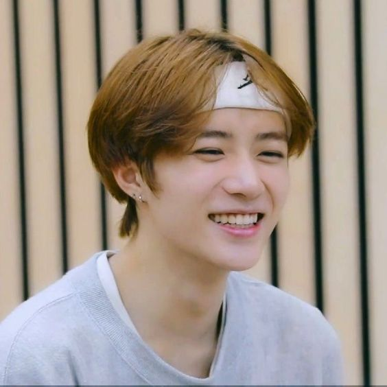
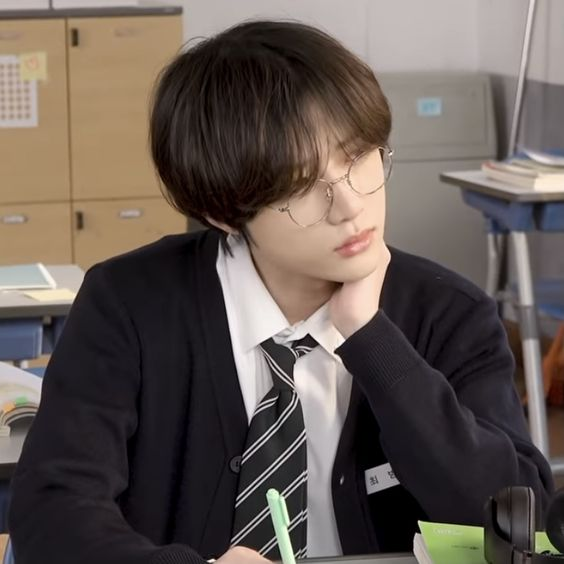
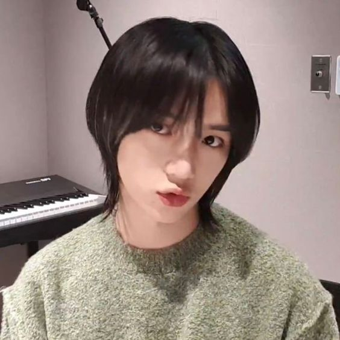
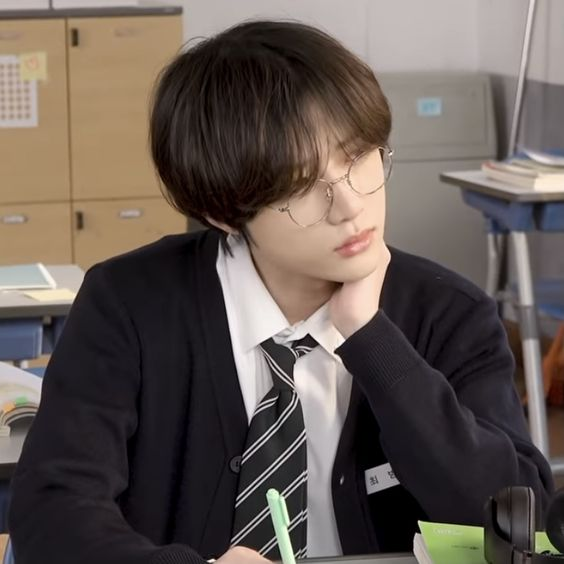
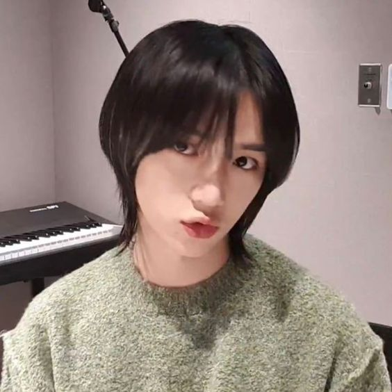

Beomgyu
♡
home = TXT

 



Quem é Beomgyu?
- Membro Oficial do Grupo Tomorrow By Together - TXT
- Nome artístico: Beomgyu (범규)
- Nome de nascimento: Choi Beom Gyu (최범규)
- Posição: Vocalista, Dançarino, Rapper, Centro, Visual
- Idade: 21 anos
- Aniversário: 13 de março de 2001
- Signo do Zodíaco: Peixes
- Zodíaco Chinês: Cobra
- Altura: 1.80 cm
- Tipo sanguíneo: AB
- MBTI: ENFJ
- Emoji representativo: 🐻
- Nacionalidade: Coreano
Curiosidades sobre Beomgyu ♡
- Nasceu em Taejeon-dong, Buk-gu, Daegu, Coreia do Sul
- Foi o 5º e último membro do grupo a ser revelado oficialmente
- Hobbies: Tocar violão e jogar online
- Ele ama a primavera e principalmente comer morangos
- Foi um aluno exemplar e se destacava por sua inteligência
- Costuma ficar acordado até tarde escrevendo canções para os membros
- Beomgyu tem seu próprio estúdio